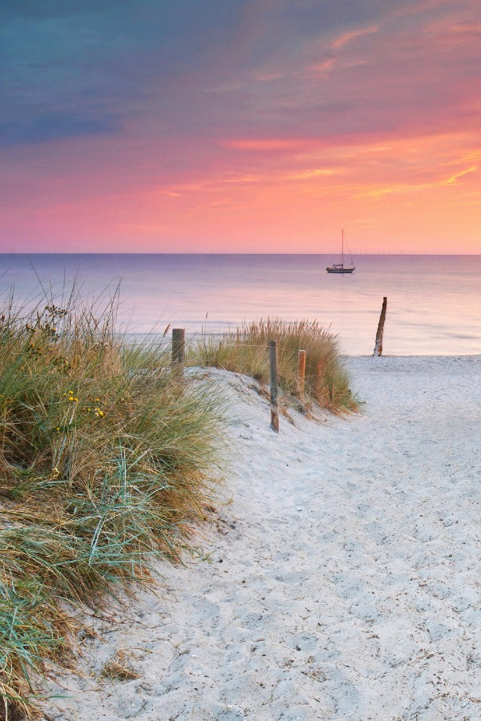
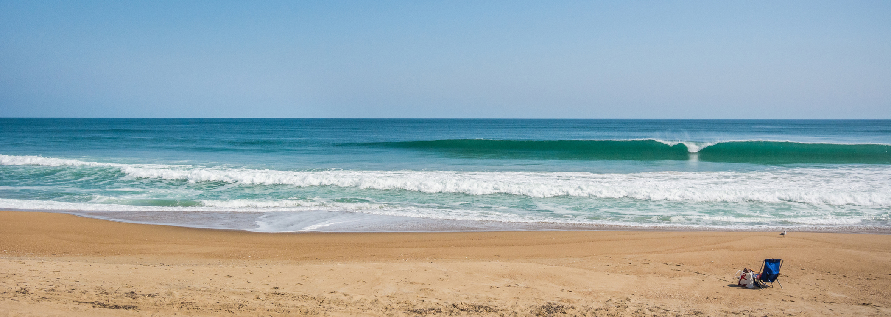

Below, You can see a photo of the Emerald Isle Beach located in Emerald Isle. Some information about this beach is that it is 12 miles long with clear, tourquious waters.

The second prettiest beach in North Carolina is called Ocracoke Island, which is in Ocracoke. Some fun facts about Ocracoke Island is that it is only accessible my ferry, air or boat, its part of the Outer Banks, and has a lot of history.

Home